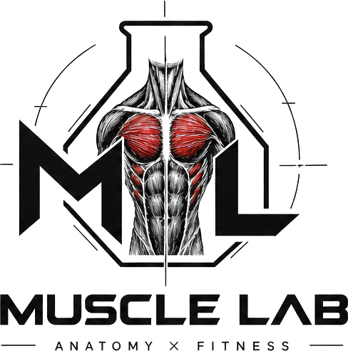

目標 尚未選取
縮放 1.0× 方位 0°
縮放 1.0× 方位 0°
拖曳旋轉 滾輪縮放 右鍵平移
載入解剖模型中…


認識肌肉 → 了解功能 → 找到對應動作 → 學習訓練。
333 條肌肉的 3D 解剖圖鑑，選一條肌肉，看它亮起來。
選一張正面照片，你的臉會變成大頭貼放在模型頭上，做動作時也會跟著動。
照片只存在你的瀏覽器裡，不會上傳。
拖曳照片，把臉放進圓圈裡。
調整骨架比例與肌肉厚度，不含脂肪與皮膚。動作示範也會套用這個體型。